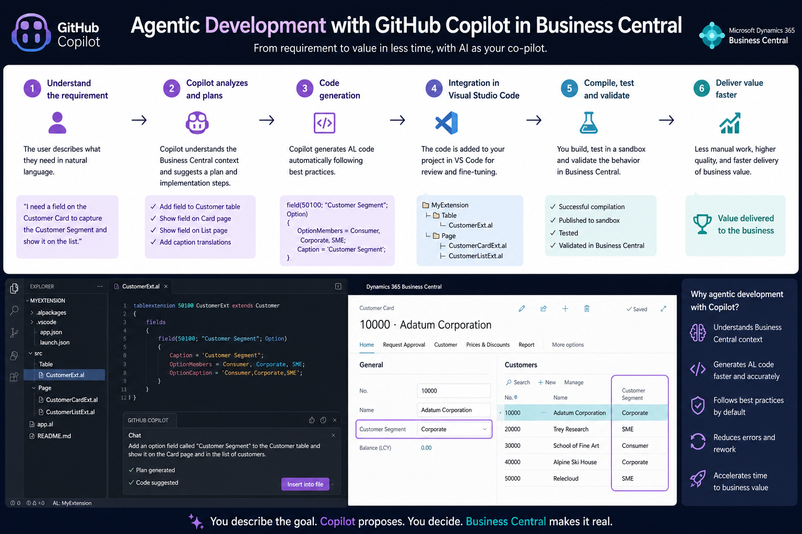
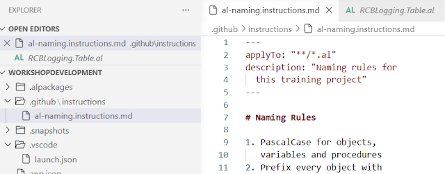
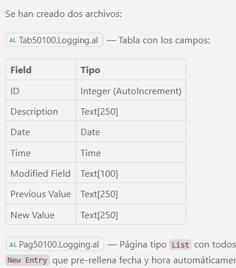

Agentic Development in Business Central: Using Instructions to Guide Your Coding Agent
When we talk about agents in Business Central, we almost always think of end-user features: a copilot that helps issue an invoice, analyze sales, or answer a question inside the app. But there's another use, less visible and just as powerful: applying agents to the development process itself — using them to write AL code, create tables, pages, and the rest of the objects that make up an extension.
This article opens a series on agentic development in Business Central, starting with its most basic building block: instructions.

What is agentic development
Agentic development means working with a coding agent — in this case, GitHub Copilot in agent mode inside Visual Studio Code — that doesn't just autocomplete lines, but carries out complete tasks: it creates tables and pages, reads app.json to understand the project's context, and proposes changes that the developer can accept or discard.
The goal isn't to replace the development team, but to increase its productivity, delegating repetitive or structural work so the team can focus on design and business logic.
The problem with starting from zero
Asking an agent for something as simple as "create a table and a page called Logging with the following fields: ID, Description, Time, Date" works, but the result reflects exactly what was typed in the prompt: field names appear as-is, with no naming conventions, no company prefix, and sometimes no consistent choice of language.
It's a decent starting point, but not the result most teams need to keep code consistent across developers.
Instructions: the first building block of agentic development
To fix this, GitHub Copilot lets you define persistent instructions that the agent automatically reads whenever it works on a given file type. In an AL project, this is organized as follows:
- A
.githubfolder is created at the root of the project. - An instructions file is added inside it.
- The file includes an
applyToheader specifying which file types the rules apply to (for example, every file with the.alextension).
From that point on, any instruction you define becomes a rule the agent follows automatically, without the developer having to repeat it in every prompt.

What kind of rules are worth defining
For AL, some of the most useful instructions are:
- Naming convention: PascalCase for objects and fields, for example.
- Extension prefix: most companies work with an identifying prefix that must appear in every object's name.
- Naming pattern: object name + object type + prefix, with a character limit (30, for example) to avoid excessively long names.
- No abbreviations, unless they're widely recognizable, to keep the code readable.
- Language for variables and fields: if the team works in English, it's worth stating it explicitly. The agent may remember a preference from an earlier session, but that doesn't guarantee it will apply it consistently every time — only an explicit instruction turns it into a mandatory rule.
Repeating the exact same initial prompt (create the Login table and page) once these instructions are in place changes the outcome completely: the agent respects the prefix, applies PascalCase, follows the defined naming pattern, and uses English field names — because now it's part of a rule, not a one-off preference.

Why this matters
Instructions aren't a decorative feature: they're how you make sure a coding agent behaves according to the team's standards instead of improvising on every interaction. The clearer the instruction, the less room the agent has to make its own calls — like picking a field's language without ever being asked to.
This is just the first piece of agentic development applied to Business Central. Future entries will add more pieces: other tools, additional configuration, and examples that take this workflow beyond the basics.
If your team is already experimenting with coding agents on AL projects, defining a solid instructions file is the step with the best return for the least effort.